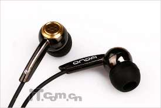
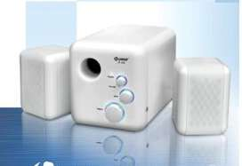
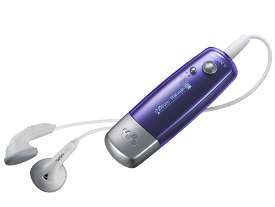

硬件基础教程
作者：TeliuTe 来源：基础教程网
耳机和音箱都是用来放音乐的，有的耳机跟麦克风在一起叫耳麦，下面我们来看一个练习；
1、耳机和音箱
1）耳机一般有头戴式和耳塞式，耳塞离耳朵太近，时间久了会不舒服；

2）耳机插头接电脑的绿色插孔，一般前面板和机箱后面都有，麦的插头接红色插孔；
耳塞上等字母L是左声道，R是右声道；
3）音箱有单独和2.1带低音炮的，把低音炮接到电脑上，音箱插头接到低音炮上，
如果是更多组合音箱，可以参考说明书，连接前置后置音箱等；

2、使用和维护
1）耳机线容易折断，尤其是靠近耳塞部分，拖到地下的插线也容易绊脚，使用时应注意；

2）新买的耳机需要“煲机”，下载一些煲机曲子，把耳机的音圈活动开，注意恰当时间和音量适中；
3）用麦录音要到音频属性里设置一下，HD Audio 声卡使用一个设置程序；
4）长时间戴耳机会损伤听力，过一段时间后休息一下，改变一下音量大小，防止听力疲劳；
本节学习了耳机和音箱的基础知识，如果你成功地完成了练习，请继续学习下一课内容；
本教程由86团学校TeliuTe制作|著作权所有
基础教程网：http://teliute.org/
美丽的校园……
转载和引用本站内容，请保留版权信息和本站链接。